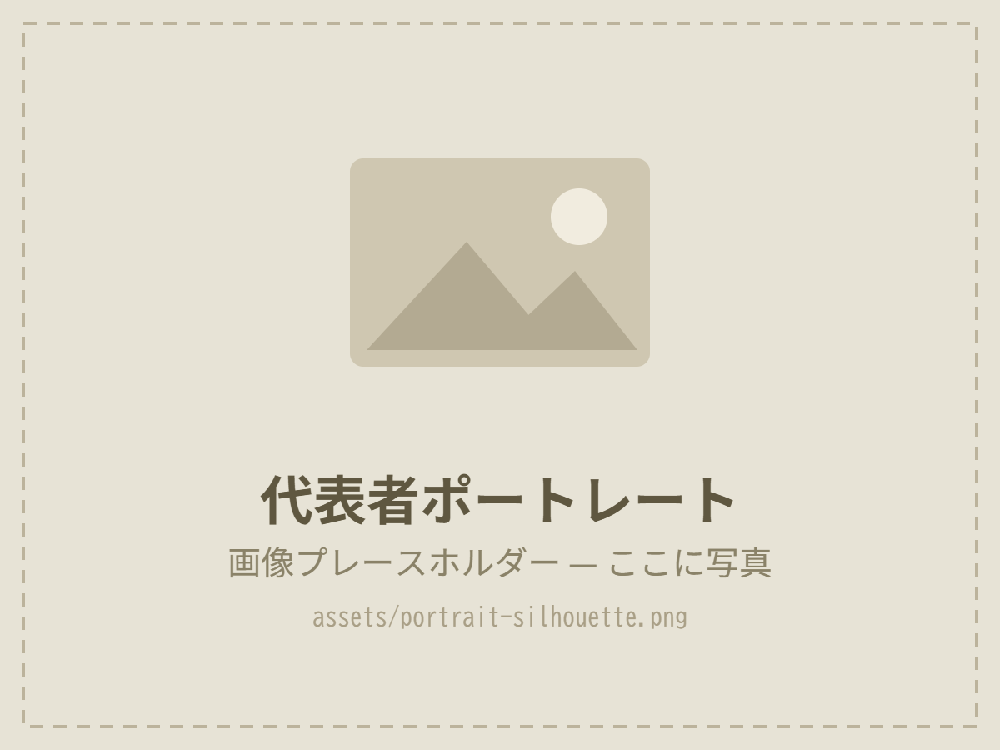

About Us
平成元年創業の「及川電気設備」を前身に、令和2年に現体制でスタート。代表の想い、理念、これまでの歩みをご紹介します。
Message

PORTRAIT依頼主の気持ちに寄り添う、誠実な仕事を。
平成元年創業の「及川電気設備」の技術を受け継ぎ、令和2年、水回りを中心とした設備会社として株式会社オヨカワ設備工業をスタートしました。
どんな工事でも、ご依頼主さまの満足を第一に、中長期的な視点からご提案することを大切にしています。見えない配管や配線こそ丁寧に。工務店さまの設備パートナーとして、地域の暮らしと建物を支えていきます。
Philosophy
表面だけを整えるのではなく、中長期のメリット・デメリットまでお伝えしたうえで、納得いただける設備をつくります。
見えない配管・配線こそ、丁寧に。
現場と工程に合わせて動く。
地域の水と暮らしのインフラを支える。
History
電気設備の会社として始まり、水回り・浄化槽へ。設備工事の幅を広げてきました。
1989平成元年
「及川電気設備」創業
2020令和2年
株式会社オヨカワ設備工業として新たにスタート
2022令和4年
電気工事業届出（千葉県知事届出 第20220081号）
Vision
工務店さま・建設会社さまの設備パートナーとして、東総・北総全域へ。
技術と資格を正当に評価し、腕の良い職人が集まる会社に。
公共工事・浄化槽更新を通じて、地域の水環境を支える。